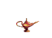

This is H1 text

| Table with a transparent GIF. |
 |
| Nested table with a transparent GIF. Use of SPAN to make text fuchsia fantasy font. |
|
| Second Level Nested table with a transparent GIF. |
|
|
|
- Use of the STYLE attribute in a block level element to make this text bold. Use of the SPAN element to change the font to fantasy, and color to fuchsia.
Paragraph showing style of italic and inheritance of color from the BODY.
Horizontal Rule below this text. (This text should not be centered.)
Following text enclosed in PRE tags. (This text using ID=p1.)
<LINK rel="stylesheet" type="text/css" href="upper.css" title="CSS">
meaning--> document contains a link to an external file which
contains a style sheet to make the text all uppercase.
PRE { margin-left: 6em;
color: olive }
meaning--> all text within the PRE tags is moved over 6em from the
left margin, and is olive color.
BODY { background: antiquewhite url(images/k9.gif) 100% 0%;
background-repeat: no-repeat;
color: blue }
meaning--> background has one image of K-9 in the upper right corner,
background color is antique white, and text in the document
is blue.
IMG { border: outset yellow thick;
background: green }
meaning--> all images have a thick, yellow, outset border, and
transparent GIFs will have a green background.
H1 { border: groove thin red }
meaning--> all H1 elements have a thin, red, groove border.
P { font: italic }
meaning--> all P elements are in italics.
HR { size: 5;
width: "50%";
align: center }
meaning--> any horizontal rule will be 5 pixels high, 50% of the
screen width, and centered.
SPAN.FLOWERY { font-family: fantasy;
color: fuchsia }
meaning--> any text using the SPAN element with the CLASS flowery
will be fuchsia and have a fantasy font.
#p1 { color: #4AF;
font: italic 25px Georgia, serif; }
meaning--> text using this ID will have italic type with
25px Georgia-serif font.